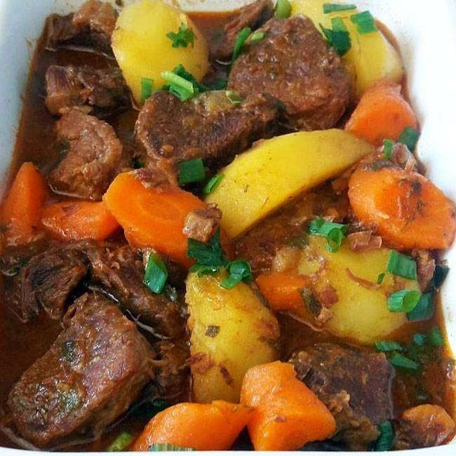

Carne de Panela com Legumes

⏱️ 40–50 min
👨👩👧👦 Serve 6 porções
Ingredientes
- 1kg de acém ou músculo em cubos
- 1 cebola picada
- 2 dentes de alho amassados
- 2 cenouras em rodelas
- 3 batatas em cubos
- 2 tomates picados
- 1 colher (sopa) de colorau ou páprica doce
- Sal, pimenta e cheiro-verde a gosto
- Água suficiente para cozinhar
Modo de preparo
- Na panela de pressão, aqueça um fio de óleo e sele a carne até dourar levemente.
- Adicione cebola, alho e tomates, refogue por alguns minutos.
- Tempere com sal, pimenta e colorau, cubra com água e tampe a panela.
- Cozinhe na pressão por cerca de 25 minutos.
- Abra a panela com cuidado, junte as cenouras e batatas e cozinhe sem pressão até os legumes ficarem macios.
- Finalize com cheiro-verde picado.
 Papo de Panela
Papo de Panela